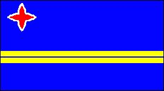
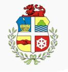

Aruba
|  |  |
Información General
Nombre oficial: Aruba
Área: 193 km²
División política:Territorio autónomo dentro del Reino de los Países Bajos
Unidad monetaria: Florines de Aruba (Guilder)
Idiomas: Holandés y papiamento (la más hablada); español e inglés (no oficiales)
Gentilicio: de Aruba
Curiosidades
El papiamento es un dialecto criollo, derivado sobre todo del criollo negro-portugués, con elementos de español antillano y holandés.
Perfil Ecónomico
Perfil Demográfico
Población: 103.000 hab.
Densidad de población: 365 hab/km²
Fuente http://www.indexmundi.com/aruba/
Perfil Cultural
Alfabetismo: 95 %
Religión:
- Católicos: 88,5%
- Protestantes: 7,4%
- No religiosos: 1,6%
- Otros: 1,2%
Sistema de Gobierno
Constitución vigente: 20 de diciembre de 1954 (enmendada el 1 de enero de 1986)
Sistema ejecutivo: Monarca holandés (Jefe de Estado, representado por el Gobernador), Primer Ministro, Consejo de Ministros.
Sistema legislativo: Parlamento (Staten) (veintiún miembros, elegidos por sufragio universal, cada cuatro años y sujeto a disolución).
Sistema judicial: Corte Superior Conjunta, Corte de Primera Instancia, Fiscal General.
Aproximación histórica
Aruba se encuentra ubicada al sur del Mar Caribe y al noroeste de Venezuela. Su territorio es plano, con un clima ecuatorial y no tiene ríos.
Descubierta por España en el siglo XV fue colonizada por Holanda a partir del siglo XVII.
En 1954 se convierte en miembro de la Federación Autónoma de las Antillas Holandesas. En 1971 un referéndum apoya con un 57 % la independencia, pero después de diferentes dificultades económicas el entonces Primer Ministro Nelson Oduber apoya la propuesta del gobierno holandés para que la isla continúe siendo parte de la Comunidad Holandesa. En 1991 se abandona la idea de independizar la isla, porque el territorio sería económicamente un desastre sin el apoyo de la metrópoli. En 1994 los gobiernos de Aruba, Antillas Holandesas y Holanda deciden aplazar los planes para la independencia del territorio prevista para 1996.
Las actividades económicas fundamentales son el turismo, las finanzas y el comercio.
«-- ir al comienzo
«-- regresar